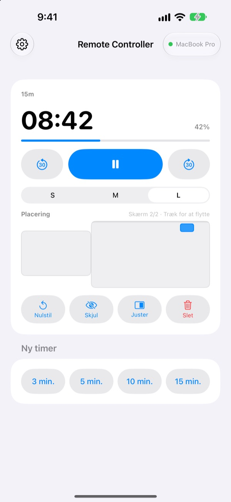
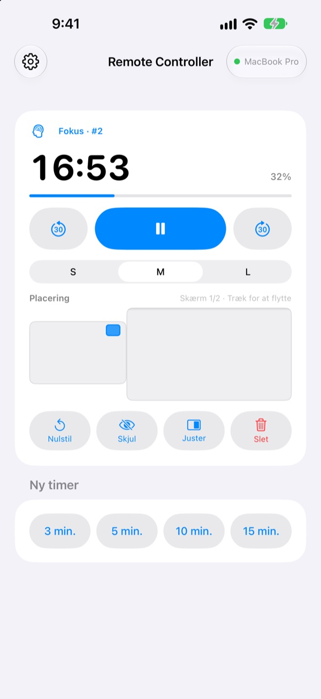
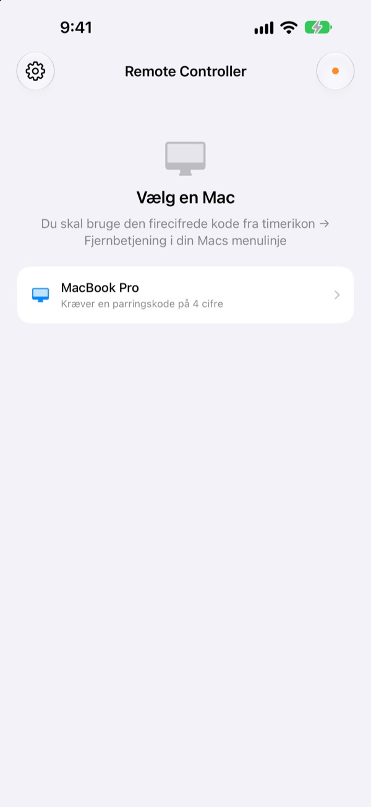

Mac’en bliver bagved.
Timeren har du i hånden.
Styr timerne i StickyPresenter på din Mac fra din iPhone. Du står forrest i lokalet og kan stadig se den resterende tid, sætte på pause, lægge 30 sekunder til eller flytte timeren væk fra den graf, den dækker.
Gratis · iOS 17 eller nyere · Kræver en Mac med StickyPresenter på samme Wi‑Fi.

Går du stadig hen til computeren for at røre ved timeren?
Dit oplæg trækker ud, og du har brug for mere tid. Timeren ligger lige oven på din vigtigste graf. Indtil nu betød det, at du måtte gå over scenen og række ud efter pegefeltet foran alle. Med Remote Controller bliver du stående og trykker én gang på din iPhone.
Se tiden der er tilbage, og ret den med det samme
Tid tilbage og fremskridt opdateres hvert sekund. Under en pomodoro kan du også se, om det er fokus eller pause, og hvilken cyklus du er i.
Trækker det ud? Læg 30 sekunder til. Bliver du færdig før tid? Træk 30 fra. Start en ny timer på 3, 5, 10 eller 15 minutter med ét tryk, og skift widgetten mellem S, M og L, så bageste række også kan læse den.

Indtast koden én gang, så er det klaret
Åbn appen, og alle Mac-computere på dit Wi‑Fi, hvor StickyPresenter kører, vises på en liste. Vælg din, og indtast den firecifrede kode fra timerikon ▸ Fjernbetjening i Mac’ens menulinje.
Derefter opretter appen selv forbindelse til den Mac, hver gang du åbner den. Ingen konto, ingen server: De to enheder taler direkte sammen over dit lokale netværk.

Klar på tre trin
- 1
Åbn StickyPresenter på din Mac
Når timerikonet er i menulinjen, er du klar. Appen bliver der, selv når du lukker alle vinduer.
- 2
Åbn appen på samme Wi‑Fi
Når den beder om adgang til det lokale netværk, så tryk på Tillad. Det er sådan, den finder din Mac.
- 3
Vælg din Mac, og indtast koden
Indtast den firecifrede parringskode fra timerikon ▸ Fjernbetjening i Mac’ens menulinje, så har du styringen.
Det kan du gøre fra din iPhone
- Tid tilbage
- Resterende tid, fremskridt, pomodorofasen fokus eller pause og cyklusnummer, hvert sekund
- Start · Pause
- Én stor knap i midten
- −30 s · +30 s
- Knapperne på hver side justerer en kørende timer med det samme
- Ny timer
- 3, 5, 10 eller 15 minutter
- Widgetstørrelse
- Widget i S, M eller L
- Placering
- Træk den på en miniature af din Macs skærmopsætning, også over på en ekstra skærm
- Skjul
- Skjul widgetten for publikum et øjeblik
- Juster
- Hent en forsvundet widget tilbage ved siden af timervinduet
- Nulstil · Slet
- Start timeren forfra, eller fjern den
- Genveje · Siri
- Sig
Start en timer med Remote Controllerfor at sætte en timer i gang på din Mac
Fjernbetjeningen virker kun med timere, der kører på din Mac. Sedler og teleprompter-manuskripter sendes aldrig til iPhone, og den skifter ikke slides.
Spørgsmål
Kan jeg bruge iPhone-appen alene?
Nej. Remote Controller er fjernbetjeningen til StickyPresenter på Mac, så StickyPresenter skal køre på en Mac på samme Wi‑Fi. Hent Mac-appen via linket nedenfor eller under Hent Mac-appen i appens indstillinger.
Min Mac vises ikke på listen.
Hvis der ikke er dukket en Mac op efter 10 sekunder, viser appen en tjekliste. Gå den igennem oppefra: StickyPresenter kører på din Mac (kig efter timerikonet i menulinjen), begge enheder er på samme Wi‑Fi (gæstenetværk virker ikke), Remote Controller er slået til på iPhone under Indstillinger ▸ Anonymitet og sikkerhed ▸ Lokalt netværk, StickyPresenter er tilladt på din Mac under Systemindstillinger ▸ Anonymitet og sikkerhed ▸ Lokalt netværk, og en eventuel VPN er slået fra.
Appen siger, at parringskoden er forkert.
Indtast de fire cifre, der vises lige nu under timerikon ▸ Fjernbetjening i Mac’ens menulinje. Hvis nogen har klikket på Ny parringskode på Mac’en, virker kun den nye kode.
Appen siger, at Mac’en ikke kan genkende denne iPhone.
Det sker efter Glem parrede fjernbetjeninger på Mac’en, eller når StickyPresenter er blevet geninstalleret. Tryk på Mac’en på listen, og indtast parringskoden én gang til.
Appen siger, at Mac’en ikke svarer.
Tjek, at Mac’en ikke er på vågeblus, at begge enheder er på samme Wi‑Fi, og at en eventuel VPN er slået fra.
Appen siger, at Mac-appen skal opdateres.
StickyPresenter på din Mac er ældre end fjernbetjeningen. Opdater den i Mac App Store, og vælg derefter Mac’en igen.
Er det sikkert i et mødelokale fuld af Mac-computere?
Ja. Fjernbetjeningen taler kun med den ene Mac, den er parret med, og en fjernbetjening, der ikke kender din kode, kan ikke nå din Mac. Alt går over en krypteret, direkte forbindelse på samme netværk. Har du nogensinde vist din kode til nogen, så klik på Ny parringskode på Mac’en.
Hvad sendes over internettet?
Dine timere og kommandoer forlader aldrig dit lokale netværk. Det eneste, der sendes over internettet, er anonyme brugsstatistikker, nedbrudsrapporter og feedback, du selv vælger at sende. Privatlivspolitikken har detaljerne.
Kan Siri starte en timer, lige før jeg skal på?
Ja. Sig »Start en timer med Remote Controller«, eller brug handlingen Start timer på Mac i Genveje. Appen åbner og starter en timer med den længde, du har valgt (1 til 600 minutter), så snart den har forbindelse til din Mac.
Spørgsmål, fejl eller idéer? Skriv til mizzking75@gmail.com, eller send dem direkte fra din iPhone via tandhjulet øverst til venstre i appen ▸ Feedback.